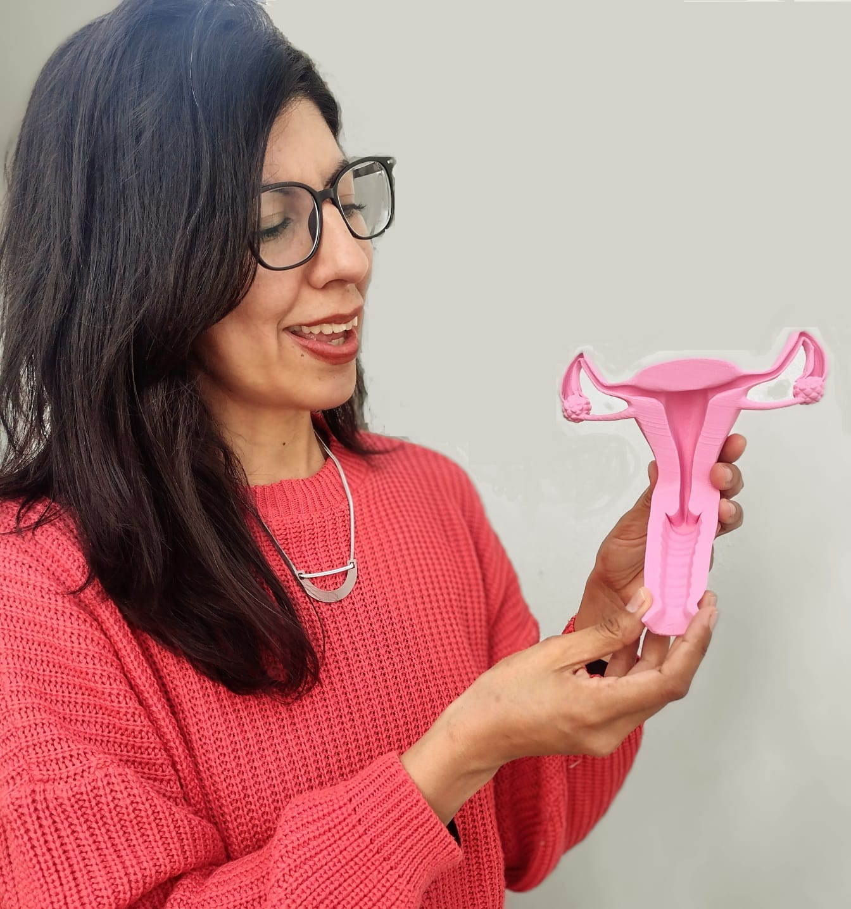
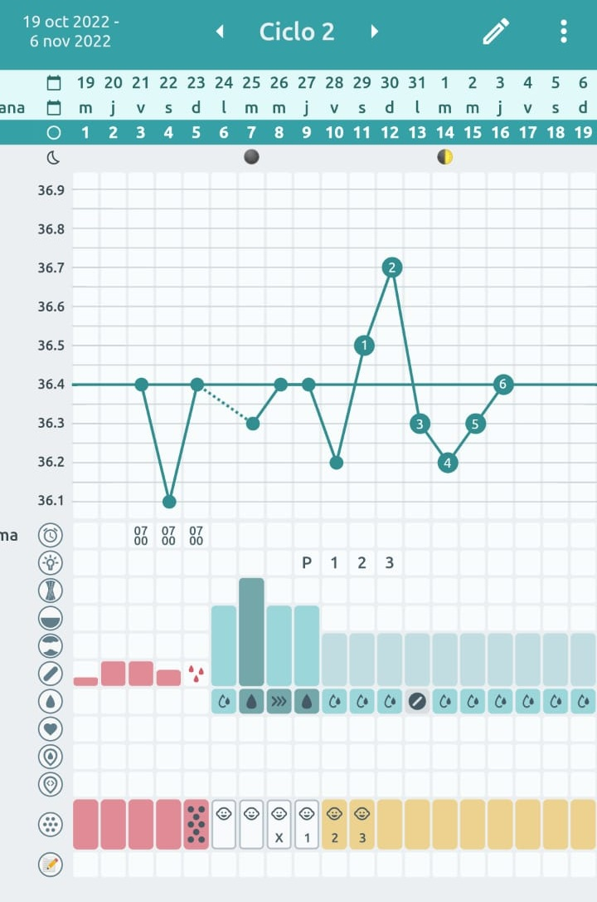

Médica MN 120572 · Universidad de Buenos Aires
Especialista en Medicina General. Formada en nutrición funcional, salud hormonal del ciclo menstrual y fitoterapia.
Salud Sexual y (no) Reproductiva y Atención Perinatal.
Atención del grupo familiar · adolescencia · adultos mayores.
Acompaño consultas y formo profesionales en interpretación clínica del ciclo menstrual y gestión autónoma de la fertilidad.

Soy médica graduada en la Universidad de Buenos Aires, con especialización en Medicina General y Familiar. Trabajo desde hace 20 años en el ámbito de salud pública y en consulta clínica.
Me desempeño como médica de cabecera, acompañando a las personas y sus familias a lo largo de todo el ciclo de vida. Busco brindar atención centrada en la persona, acorde a su contexto y a su particularidad.
Me nutro de una base científica sólida y una amplia experiencia clínica. Entiendo los cuidados en salud inseparables del respeto por la autonomía. Especializada en salud del ciclo menstrual con enfoque de género y derechos. Activista por la Justicia Reproductiva.
Ofrezco consultas presenciales y virtuales con un abordaje integral. Cada consulta es un espacio de escucha real, donde tu historia importa y el tratamiento se piensa para vos.
Como médica generalista especializada en salud hormonal y método sintotérmico, trabajo con el ciclo menstrual como signo vital y formo profesionales en interpretación del ciclo como biomarcador clínico.
Abordo el reconocimiento de la fertilidad como una herramienta clínica válida, con aplicaciones documentadas tanto en anticoncepción como en monitoreo de la salud ginecológica y acompañamiento en la búsqueda de embarazo.
Trabajo en la formación de profesionales de la salud que deseen incorporar estos conocimientos a su práctica, con énfasis en:

Comparto artículos científicos, revisiones y actualizaciones clínicas; así como reflexiones sobre salud del ciclo menstrual ovulatorio, la gestión de la fertilidad y la justicia reproductiva. Publicado en Substack, gratis.
✉️ Suscribirse →Dejá tu email y recibís "Reconocimiento de la Fertilidad y Alfabetización Corporal" en formato digital directamente en tu casilla. Todo lo que necesitás saber para introducirte en el mundo de la gestión autónoma de la fertilidad.